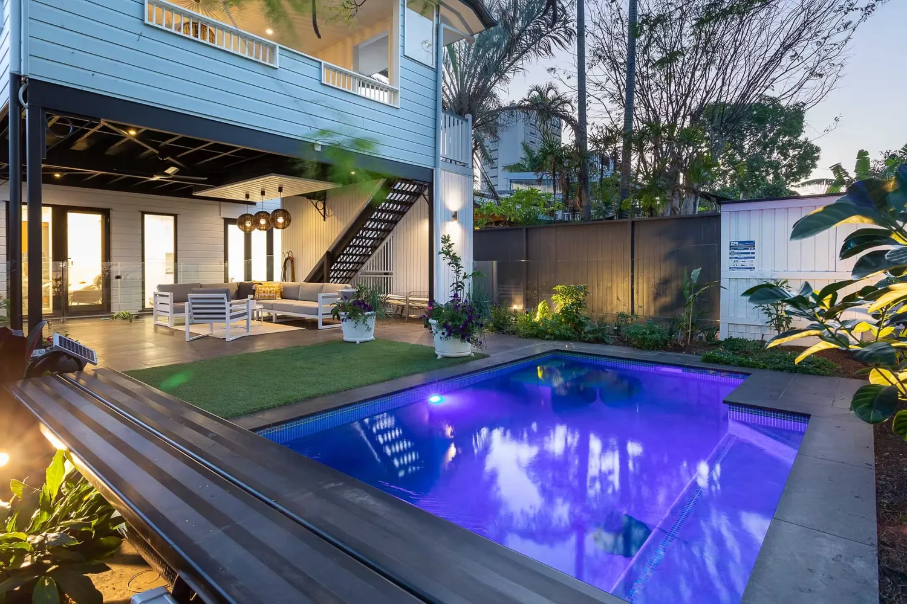

Home / Renovations
Pool renovations · BrisbaneBring your old pool back to life.
You don't always need a new pool, you need the one you've got to look and feel new again. We renovate the pool and the whole backyard around it.
You don't always need a new pool, you need the one you've got to look and feel new again. We renovate the pool and the whole backyard around it.
Cracked interiors, dated tiles, old equipment, non-compliant fencing, a garden that's given up. We fix the lot in one go, so you get a backyard you actually want to be in.

New interiors, waterline tiles and coping to make an old shell look brand new.

Modern pumps, filtration and lighting, plus fresh decking and paving around the pool.

Compliant glass or pool fencing and a re-landscaped surround to finish the transformation.

Because we do the pool, the fencing and the landscaping, your reno runs as one job with one team. We manage it end to end and keep you posted the whole way.
See renovation projectsIf the concrete shell is sound, renovating is almost always the better value. A new interior, waterline tiles and coping make an old shell look brand new for a fraction of a rebuild. We inspect the shell first and tell you straight if it's worth saving.
The same O'Sullivan pebble and glass ranges we use on new custom pools. Pebble is hardy, non-slip and affordable. Full glass is smoother, more durable and sparkles in the sun. We bring samples so you can see them against your yard.
Often, yes. Queensland's pool safety laws have tightened over the years, and an older fence may not meet today's standard. You also need a pool safety certificate to sell or lease a property with a pool. We build compliant frameless glass or traditional pool fencing and get it certified as part of the reno.
That's where we're different. Because we're a pool builder and a landscaper in one, the paving, decking, retaining, garden, turf and lighting are part of the same job. See our pool landscaping work.
Yes. We're based at Geebung on the northside and renovate pools right across Brisbane, including the northside and Moreton Bay, the inner and eastern suburbs, and bayside and Redlands.
Send a few photos of the pool and yard as they are now, plus your address. We'll take a look, visit if it's worth it, and come back with what's possible and a fixed quote.
Send us a few photos of your pool as it is now. We'll tell you what's possible.
Enquire about a reno